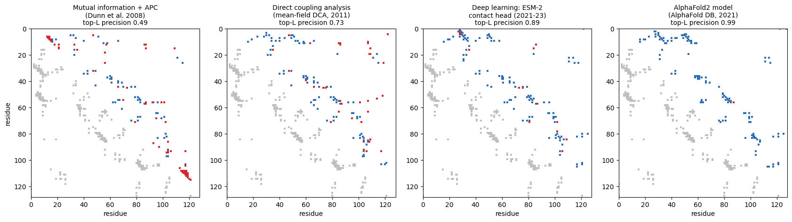
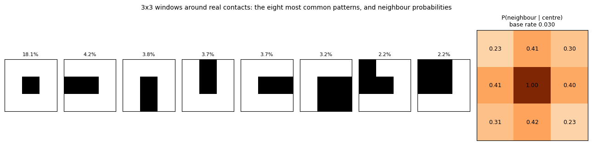
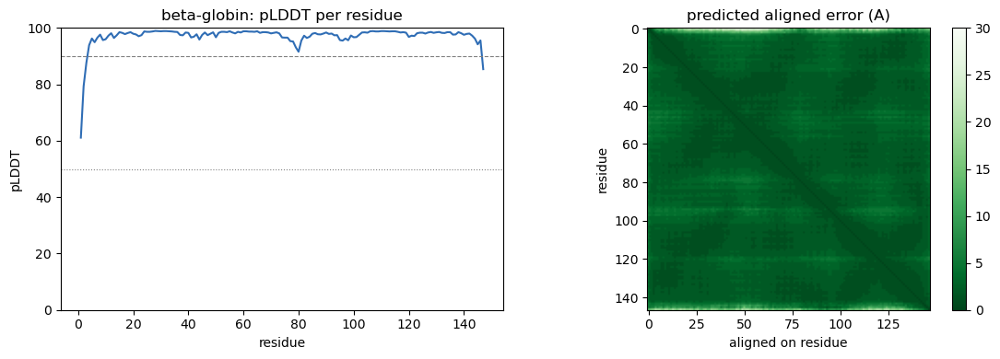
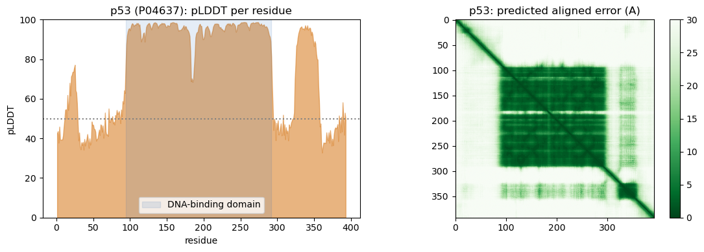
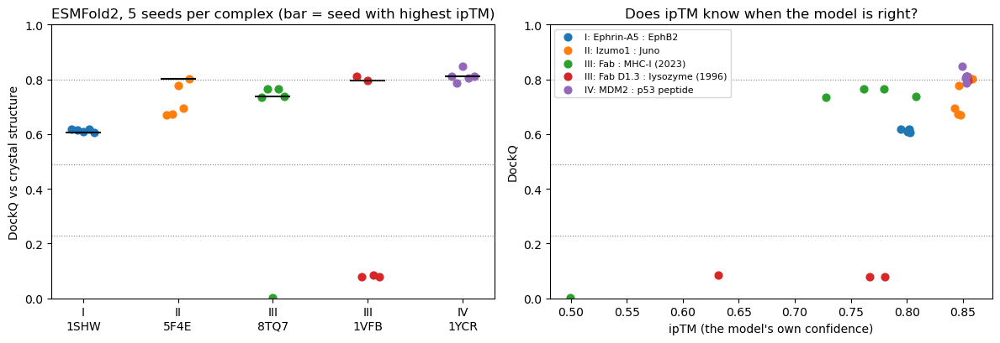
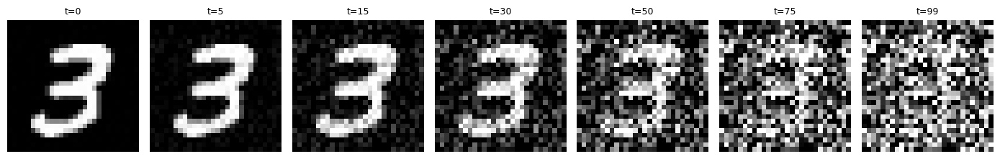
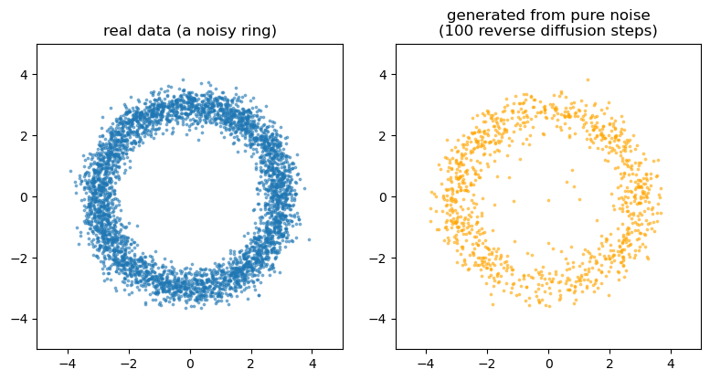

# Install the libraries Colab does not come with (does nothing if they are already installed)
import importlib.util, subprocess, sys
for module, package in [("Bio", "biopython")]:
if importlib.util.find_spec(module) is None:
subprocess.run([sys.executable, "-m", "pip", "install", "-q", package], check=True)Session 12 — AlphaFold and generative models of protein structure, in code
Three parts, following the book page:
- From contacts to distances. Real contact maps are not random: only a fraction of all possible local patterns ever occur. This is what the contact predictors of the late 2010s learned to exploit.
- AlphaFold2 in practice. Fetch AlphaFold DB models with their confidence scores (pLDDT, PAE), compare a model with the crystal structure, see what low confidence means for a partly disordered protein (p53), and predict a structure from a single sequence with ESMFold.
- Generative models. The forward noising process of a diffusion model, and a small diffusion model that turns pure noise into data. AlphaFold3 and RFdiffusion use the same idea on atom coordinates.
Everything runs on a CPU in a few minutes. Structures and models are fetched live from the RCSB PDB, the AlphaFold DB and the ESM Atlas API.
import io, os, subprocess, sys, tempfile, collections
import numpy as np
import requests
import matplotlib.pyplot as plt
import torch, torch.nn as nn, torch.nn.functional as F
import torchvision
from Bio.PDB import PDBParser
from Bio.PDB.Polypeptide import three_to_index, index_to_one
try:
import tmtools
except ImportError: # e.g. on Colab
subprocess.run([sys.executable, "-m", "pip", "install", "-q", "tmtools"], check=True)
import tmtools
torch.manual_seed(0); np.random.seed(0)
device = "cuda" if torch.cuda.is_available() else "cpu"
FIGS = "../figs" if os.path.isdir("../figs") else "."
def pdb_text(pdb_id):
return requests.get(f"https://files.rcsb.org/download/{pdb_id}.pdb", timeout=60).text
def chain_residues(text, chain_id=None):
'''Standard residues with a CA atom, and their one-letter sequence.'''
model = PDBParser(QUIET=True).get_structure("x", io.StringIO(text))[0]
chain = model[chain_id] if chain_id else next(iter(model))
res = [r for r in chain if r.id[0] == " " and "CA" in r]
return res, "".join(index_to_one(three_to_index(r.get_resname())) for r in res)
def contact_map(res, cutoff=8.0):
xyz = np.array([(r["CB"] if "CB" in r else r["CA"]).coord for r in res])
return np.linalg.norm(xyz[:, None] - xyz[None], axis=2) < cutoff
def ca(res):
return np.array([r["CA"].coord for r in res])
def alphafold_db(accession):
meta = requests.get(f"https://alphafold.ebi.ac.uk/api/prediction/{accession}", timeout=60).json()[0]
model = requests.get(meta["pdbUrl"], timeout=60).text
pae = requests.get(meta["paeDocUrl"], timeout=60).json()
pae = np.array((pae[0] if isinstance(pae, list) else pae)["predicted_aligned_error"])
res, seq = chain_residues(model)
plddt = np.array([r["CA"].get_bfactor() for r in res])
return meta, res, seq, plddt, paePart 1 — From contacts to distances
One protein, four generations of contact prediction
The bacterial chemotaxis protein CheY (PDB 3CHY, 128 residues) belongs to a huge family, the response regulators. We have an alignment of 11,084 homologous sequences (from the ColabFold MMseqs2 server, hosted with the course). From it we compute two coevolution scores ourselves:
- mutual information between every pair of columns, with the average product correction (APC) of Dunn et al. (2008);
- direct coupling analysis in its simplest, mean-field form (Morcos et al. 2011): the couplings are minus the inverse of the covariance matrix of the alignment. Inverting the matrix is what separates direct couplings from indirect ones. The idea of one global model that separates direct from indirect couplings goes back to Lapedes et al. (1999; a 2002 manuscript, posted on arXiv only in 2012), work that was long overlooked.
We then compare them with a deep-learning predictor (the contact head of the ESM-2 language model, precomputed) and with the contacts in the AlphaFold2 model.
import gzip, re
DATA_URL = "https://raw.githubusercontent.com/ElofssonLab/kb8029-book/main/notebooks/data"
def course_file(name):
'''A file hosted with the course, from the local copy or from GitHub.'''
path = os.path.join("data", name)
if os.path.exists(path):
return open(path, "rb").read()
r = requests.get(f"{DATA_URL}/{name}", timeout=120); r.raise_for_status(); return r.content
msa = [l for l in gzip.decompress(course_file("session12-chey-msa.fasta.gz")).decode().split("\n")
if l and not l.startswith(">")]
AA = "ACDEFGHIKLMNPQRSTVWY-"; q = 21
X = np.array([[AA.index(c) if c in AA else 20 for c in s] for s in msa])
N, L = X.shape
onehot = np.eye(q, dtype=np.float32)[X].reshape(N, L * q)
# weight each sequence by 1 / (number of sequences at >= 80% identity), in chunks to save memory
neighbours = np.concatenate([((onehot[k:k + 2000] @ onehot.T) / L >= 0.8).sum(1)
for k in range(0, N, 2000)])
w = 1.0 / neighbours; Meff = w.sum()
print(f"{N} sequences of length {L}; effective number of sequences {Meff:.0f}")
def frequencies(pseudocount):
fi = (w[:, None] * onehot).sum(0).reshape(L, q) / Meff
fij = ((onehot * w[:, None]).T @ onehot / Meff).reshape(L, q, L, q)
fi = (1 - pseudocount) * fi + pseudocount / q
fij = (1 - pseudocount) * fij + pseudocount / q**2
for i in range(L):
fij[i, :, i, :] = np.diag(fi[i])
return fi, fij
def apc(S):
S = S.copy(); np.fill_diagonal(S, 0)
m = S.sum(0) / (len(S) - 1)
S = S - np.outer(m, m) / m.mean(); np.fill_diagonal(S, 0); return S
fi, fij = frequencies(0.001)
with np.errstate(divide="ignore", invalid="ignore"):
terms = fij * np.log(fij / np.einsum("ia,jb->iajb", fi, fi))
MI = apc(np.nan_to_num(terms).sum((1, 3)))
fi, fij = frequencies(0.5)
C = (fij - np.einsum("ia,jb->iajb", fi, fi))[:, :20, :, :20].reshape(L * 20, L * 20)
J = -np.linalg.inv(C).reshape(L, 20, L, 20) # mean-field couplings
J = J - J.mean(1, keepdims=True) - J.mean(3, keepdims=True) + J.mean((1, 3), keepdims=True)
DCA = apc(np.sqrt((J ** 2).sum((1, 3))))
print("MI and DCA scores computed for", L * (L - 1) // 2, "residue pairs")11084 sequences of length 128; effective number of sequences 8920
MI and DCA scores computed for 8128 residue pairschey_res, chey_seq = chain_residues(pdb_text("3CHY"), "A")
true_map = contact_map(chey_res) # C-beta < 8 A
esm2 = np.load(io.BytesIO(course_file("session12-chey-esm2.npy")))
# how it was made (needs a 2.5 GB download):
# model, alphabet = esm.pretrained.esm2_t33_650M_UR50D()
# contacts = model.predict_contacts(alphabet.get_batch_converter()([("x", chey_seq)])[2])[0]
meta_c, af_c, af_c_seq, _, _ = alphafold_db("P0AE67") # E. coli CheY, residues 1-129
af_by_num = {r.id[1]: r for r in af_c}
af_xyz = np.array([(af_by_num[r.id[1]]["CB"] if "CB" in af_by_num[r.id[1]] else af_by_num[r.id[1]]["CA"]).coord
for r in chey_res])
af_dist = np.linalg.norm(af_xyz[:, None] - af_xyz[None], axis=2)
methods = [("Mutual information + APC\n(Dunn et al. 2008)", MI),
("Direct coupling analysis\n(mean-field DCA, 2011)", DCA),
("Deep learning: ESM-2\ncontact head (2021-23)", esm2),
("AlphaFold2 model\n(AlphaFold DB, 2021)", -af_dist)]
iu, ju = np.triu_indices(L, 6) # pairs at least 6 apart
fig, axes = plt.subplots(1, 4, figsize=(17, 4.6))
for ax, (name, S) in zip(axes, methods):
top = np.argsort(-S[iu, ju])[:L]; pi, pj = iu[top], ju[top]; ok = true_map[pi, pj]
ti, tj = np.where(np.tril(true_map, -6))
ax.scatter(tj, ti, s=6, color="0.75", marker="s", lw=0)
ax.scatter(pj[ok], pi[ok], s=9, color="#2f6db5", marker="s", lw=0)
ax.scatter(pj[~ok], pi[~ok], s=9, color="#d62728", marker="s", lw=0)
ax.set_xlim(0, L); ax.set_ylim(L, 0); ax.set_aspect("equal"); ax.set_xlabel("residue")
ax.set_title(f"{name}\ntop-L precision {ok.mean():.2f}", fontsize=10)
print(f"{name.splitlines()[0]:28s} top-L precision {ok.mean():.2f}")
axes[0].set_ylabel("residue")
plt.tight_layout(); plt.savefig(f"{FIGS}/session12-contact-progress.png", dpi=150, bbox_inches="tight"); plt.show()Mutual information + APC top-L precision 0.49
Direct coupling analysis top-L precision 0.73
Deep learning: ESM-2 top-L precision 0.89
AlphaFold2 model top-L precision 0.99
Upper triangles: each method’s L = 128 best-scoring pairs, blue when they are true contacts, red when not. Lower triangles: the true contacts. Mutual information makes blocks of false positives, where a whole region is conserved or shares its evolutionary history. DCA removes most of them. The deep-learning predictor, which has learned what contact maps look like, is cleaner still. The AlphaFold2 model gets almost everything right. (The ESM-2 contact head stands in for the dedicated contact predictors of 2017-2019, such as RaptorX-Contact and PconsC4, whose software no longer installs on current Python.)
Try it: keep only the first 200 or 1,000 sequences of the alignment and recompute. How quickly does DCA fall apart as the family shrinks?
Contacts come in patterns
Coevolution (Session 10) scores each residue pair on its own. But contacts in real proteins are not scattered at random: a helix packing against a helix, or two paired strands, produce characteristic local patterns. The lecture’s example: take every contact between residues i and j (far from the diagonal) and look at the 3 × 3 window around it, residues i−1..i+1 against j−1..j+1. With the centre fixed, 2⁸ = 256 patterns are possible. How many occur, and how much does one contact tell us about its neighbours?
proteins = [("4HHB", "B"), ("1TEN", "A"), ("1UBQ", "A"), ("1SHW", "A"),
("2PTN", "A"), ("1MBN", "A"), ("3LZT", "A"), ("1CRN", "A")]
patterns = collections.Counter()
neighbour = np.zeros((3, 3)); n_centre = 0; n_pairs = 0; n_contacts = 0
for pid, cid in proteins:
res, seq = chain_residues(pdb_text(pid), cid)
C = contact_map(res)
L = len(C)
i, j = np.triu_indices(L, 6)
n_pairs += len(i); n_contacts += C[i, j].sum()
for a in range(1, L - 1):
for b in range(a + 6, L - 1):
if C[a, b]:
window = C[a - 1:a + 2, b - 1:b + 2]
patterns[tuple(window.flatten().astype(int))] += 1
neighbour += window; n_centre += 1
print(f"{pid} chain {cid}: {L} residues")
base = n_contacts / n_pairs
print(f"\n{n_centre} contacts; {len(patterns)} of the 256 possible 3x3 patterns around them occur")
print(f"base rate: {base:.3f} of all residue pairs (|i-j| >= 6) are in contact")
P = neighbour / n_centre
print("P(neighbouring pair in contact | centre pair in contact):")
print(np.round(P, 2))4HHB chain B: 146 residues
1TEN chain A: 89 residues
1UBQ chain A: 76 residues
1SHW chain A: 138 residues
2PTN chain A: 223 residues
1MBN chain A: 153 residues
3LZT chain A: 129 residues
1CRN chain A: 46 residues
1958 contacts; 146 of the 256 possible 3x3 patterns around them occur
base rate: 0.030 of all residue pairs (|i-j| >= 6) are in contact
P(neighbouring pair in contact | centre pair in contact):
[[0.23 0.41 0.3 ]
[0.41 1. 0.4 ]
[0.31 0.42 0.23]]fig = plt.figure(figsize=(13, 3.4))
common = patterns.most_common(8)
for k, (p, n) in enumerate(common):
ax = fig.add_subplot(1, 10, k + 1)
ax.imshow(np.array(p).reshape(3, 3), cmap="Greys", vmin=0, vmax=1)
ax.set_title(f"{n / n_centre:.1%}", fontsize=8); ax.set_xticks([]); ax.set_yticks([])
ax = fig.add_subplot(1, 10, (9, 10))
im = ax.imshow(P, cmap="Oranges", vmin=0, vmax=1)
for (r, c), v in np.ndenumerate(P):
ax.text(c, r, f"{v:.2f}", ha="center", va="center", fontsize=9)
ax.set_title(f"P(neighbour | centre)\nbase rate {base:.3f}", fontsize=9); ax.set_xticks([]); ax.set_yticks([])
plt.suptitle("3x3 windows around real contacts: the eight most common patterns, and neighbour probabilities", fontsize=10)
plt.tight_layout()
plt.savefig(f"{FIGS}/session12-contact-patterns.png", dpi=150, bbox_inches="tight"); plt.show()
Only part of the possible patterns ever occur, and a contact makes its neighbours far more likely to be contacts too than the base rate suggests. A predictor that looks at a neighbourhood of the contact map, not one pair at a time, can exploit this. PconsC2 (2014) did it with random forests over an 11 × 11 window of first-round predictions; deep residual CNNs (RaptorX-Contact, 2017; AlphaFold 1, 2018) learned it end to end, which is Session 10’s “a contact map is an image”.
Part 2 — AlphaFold2 in practice
An AlphaFold DB model and its confidence
The AlphaFold Database holds predictions for more than 214 million proteins. Each model comes with two confidence measures:
- pLDDT (0-100, stored in the B-factor column): per residue, how well the local structure is predicted to agree with the truth. Above 90 is very high, below 50 very low. Low confidence does not by itself mean disorder: disorder is one common reason, but so are too few homologs, several conformations and an uncertain domain orientation.
- PAE (predicted aligned error, in Å): for every pair of residues, the expected position error of residue j when the model is aligned on residue i. Low PAE between two domains means their relative placement is confident.
meta, af_res, af_seq, af_plddt, af_pae = alphafold_db("P68871") # human beta-globin
print(meta["entryId"], meta["uniprotDescription"], f"- {len(af_seq)} residues, mean pLDDT {af_plddt.mean():.1f}")
nat_res, nat_seq = chain_residues(pdb_text("4HHB"), "B")
tm = tmtools.tm_align(ca(af_res), ca(nat_res), af_seq, nat_seq)
print(f"AlphaFold model vs crystal structure 4HHB chain B: TM-score {tm.tm_norm_chain2:.3f}, "
f"RMSD {tm.rmsd:.2f} A over the aligned residues")
fig, (a1, a2) = plt.subplots(1, 2, figsize=(11, 4))
a1.plot(np.arange(1, len(af_plddt) + 1), af_plddt, color="#2f6db5")
a1.axhline(90, ls="--", color="grey", lw=0.8); a1.axhline(50, ls=":", color="grey", lw=0.8)
a1.set_ylim(0, 100); a1.set_xlabel("residue"); a1.set_ylabel("pLDDT"); a1.set_title("beta-globin: pLDDT per residue")
im = a2.imshow(af_pae, cmap="Greens_r", vmin=0, vmax=30)
a2.set_title("predicted aligned error (A)"); a2.set_xlabel("aligned on residue"); a2.set_ylabel("residue")
plt.colorbar(im, ax=a2, fraction=0.046)
plt.tight_layout(); plt.savefig(f"{FIGS}/session12-hbb-plddt-pae.png", dpi=150, bbox_inches="tight"); plt.show()AF-P68871-F1 Hemoglobin subunit beta - 147 residues, mean pLDDT 97.2
AlphaFold model vs crystal structure 4HHB chain B: TM-score 0.988, RMSD 0.51 A over the aligned residues
What low confidence means, and what it does not: p53
The tumour suppressor p53 has a folded DNA-binding domain and long intrinsically disordered regions. Its N-terminal transactivation domain only folds into a helix when bound to a partner such as MDM2 (PDB 1YCR), the “Region IV” example of the lecture.
meta53, res53, seq53, plddt53, pae53 = alphafold_db("P04637")
pos = np.arange(1, len(plddt53) + 1)
print(f"p53: {len(seq53)} residues; {np.mean(plddt53 < 50):.0%} of residues have pLDDT < 50")
for name, a, b in [("N-terminal region (1-60)", 1, 60), ("DNA-binding domain (94-292)", 94, 292),
("C-terminal 40 residues", len(seq53) - 39, len(seq53))]:
print(f" {name:30s} mean pLDDT {plddt53[a - 1:b].mean():5.1f}")
fig, (a1, a2) = plt.subplots(1, 2, figsize=(11, 4))
a1.fill_between(pos, plddt53, color="#d9822b", alpha=0.6)
a1.axvspan(94, 292, color="#2f6db5", alpha=0.12, label="DNA-binding domain")
a1.axhline(50, ls=":", color="grey")
a1.set_ylim(0, 100); a1.set_xlabel("residue"); a1.set_ylabel("pLDDT"); a1.legend(loc="lower center")
a1.set_title("p53 (P04637): pLDDT per residue")
im = a2.imshow(pae53, cmap="Greens_r", vmin=0, vmax=30)
a2.set_title("p53: predicted aligned error (A)"); plt.colorbar(im, ax=a2, fraction=0.046)
plt.tight_layout(); plt.savefig(f"{FIGS}/session12-p53-plddt-pae.png", dpi=150, bbox_inches="tight"); plt.show()p53: 393 residues; 30% of residues have pLDDT < 50
N-terminal region (1-60) mean pLDDT 47.6
DNA-binding domain (94-292) mean pLDDT 95.3
C-terminal 40 residues mean pLDDT 45.8
Low pLDDT does not mean AlphaFold has failed. It usually marks regions with no single structure. The PAE map shows one confident block, the DNA-binding domain, and no confident relative placement for the rest.
Structure from a single sequence: ESMFold
AlphaFold2 needs a multiple sequence alignment. ESMFold (Lin et al. 2023) replaces it with the ESM-2 protein language model of Session 11 and predicts a structure from one sequence, in seconds, through the public ESM Atlas API. Here: Ephrin-A5, chain A of PDB 1SHW, the Region I exercise target.
ephrin = ("VADRYAVYWNSSNPRFQRGDYHIDVCINDYLDVFCPHYEDSVPEDKTERYVLYMVNFDGYSACDHTSKGFKRWECNRPHSPNGPLKFSEKFQL"
"FTPFSLGFEFRPGREYFYISSAIPDNGRRSCLKLKVFVRPTNSCM")
try:
r = requests.post("https://api.esmatlas.com/foldSequence/v1/pdb/", data=ephrin, timeout=120)
esm_res, esm_seq = chain_residues(r.text)
esm_plddt = np.array([x["CA"].get_bfactor() for x in esm_res])
esm_plddt = esm_plddt * 100 if esm_plddt.max() <= 1 else esm_plddt
cry_res, cry_seq = chain_residues(pdb_text("1SHW"), "A")
t = tmtools.tm_align(ca(esm_res), ca(cry_res), esm_seq, cry_seq)
print(f"ESMFold, single sequence, {len(esm_seq)} residues: mean pLDDT {esm_plddt.mean():.1f}; "
f"vs crystal 1SHW chain A: TM-score {t.tm_norm_chain2:.3f}, RMSD {t.rmsd:.2f} A")
except Exception as e:
print("The ESM Atlas API did not answer (it is a free public service):", e)ESMFold, single sequence, 138 residues: mean pLDDT 86.0; vs crystal 1SHW chain A: TM-score 0.941, RMSD 1.27 AA TM-score above 0.5 means the same fold; above about 0.9 the two structures are nearly identical. For a well-studied domain like this, a single sequence is enough, because the language model has learned the family. For proteins from small families, and for complexes, alignments still help (lecture: ESMFold is fast, “accuracy slightly worse for single proteins, much worse for complexes”).
Complexes with ESMFold2
ESMFold2 (Candido et al. 2026) is built for complexes. It joins the ESMC language model (6 billion parameters) to an AlphaFold3-style diffusion module. We ran it on one complex from each of the four regions on the book page, plus an older antibody complex, with five seeds each (single sequence, no alignment).
The model has about 7 billion parameters. In our runs it used 16-26 GB of GPU memory, more than Colab’s free GPU offers. The predictions were therefore made on a lab server with two 48 GB GPUs and are hosted with the course. To run it yourself on a large GPU (pip install esm):
from transformers.models.esmfold2.modeling_esmfold2 import ESMFold2Model
from esm.models.esmfold2 import ESMFold2InputBuilder, ProteinInput, StructurePredictionInput
model = ESMFold2Model.from_pretrained("biohub/ESMFold2").cuda().eval()
spi = StructurePredictionInput(sequences=[ProteinInput(id="A", sequence=seq_a),
ProteinInput(id="B", sequence=seq_b)])
result = ESMFold2InputBuilder().fold(model, spi, num_loops=20, num_sampling_steps=100, seed=0)
print(result.iptm); open("model.cif", "w").write(result.complex.to_mmcif())The Biohub Platform (biohub.ai) also runs it for free after sign-up, with an API key. Here we score every model against the crystal structure with DockQ (0-1; 0.23 acceptable, 0.49 medium, 0.80 high quality).
import gzip, json
try:
from DockQ.DockQ import load_PDB, run_on_all_native_interfaces
except ImportError: # e.g. on Colab
subprocess.run([sys.executable, "-m", "pip", "install", "-q", "DockQ"], check=True)
from DockQ.DockQ import load_PDB, run_on_all_native_interfaces
EF2 = "data/session12-esmfold2"
EF2_URL = "https://raw.githubusercontent.com/ElofssonLab/kb8029-book/main/notebooks/data/session12-esmfold2"
def ef2_file(name):
'''A hosted ESMFold2 file, from the local copy or from GitHub.'''
path = os.path.join(EF2, name)
if os.path.exists(path):
return open(path, "rb").read()
r = requests.get(f"{EF2_URL}/{name}", timeout=60); r.raise_for_status(); return r.content
# region, name, the two partners (crystal chain ids), crystal chain -> model chain
targets = {"1SHW": ("I", "Ephrin-A5 : EphB2", "A", "B", {"A": "A", "B": "B"}),
"5F4E": ("II", "Izumo1 : Juno", "A", "B", {"A": "A", "B": "B"}),
# 8TQ7 has two copies; Fab F/G binds MHC chain C (+ b2m D, peptide E)
"8TQ7": ("III", "Fab : MHC-I (2023)", "FG", "CDE",
{"C": "A", "D": "B", "E": "E", "F": "F", "G": "G"}),
"1VFB": ("III", "Fab D1.3 : lysozyme (1996)", "AB", "C", {"A": "A", "B": "B", "C": "C"}),
"1YCR": ("IV", "MDM2 : p53 peptide", "A", "B", {"A": "A", "B": "B"})}
scores = json.loads(ef2_file("esmfold2_scores.json"))
tmp = tempfile.mkdtemp()
natives = {}
for pid in targets:
ext = "cif" if pid == "8TQ7" else "pdb"
path = os.path.join(tmp, f"{pid}.{ext}")
open(path, "w").write(requests.get(f"https://files.rcsb.org/download/{pid}.{ext}", timeout=60).text)
natives[pid] = load_PDB(path)
for s in scores:
region, name, rec, lig, chain_map = targets[s["pdb"]]
path = os.path.join(tmp, s["file"])
open(path, "wb").write(gzip.decompress(ef2_file(s["file"] + ".gz")))
result, _ = run_on_all_native_interfaces(load_PDB(path), natives[s["pdb"]], chain_map=chain_map)
# DockQ of the interfaces between the two partners, averaged
between = [v["DockQ"] for k, v in result.items() if (k[0] in rec) != (k[1] in rec)]
s["dockq"] = float(np.mean(between))
print(f"{'region':6s} {'complex':28s} {'seed':>4s} {'ipTM':>5s} {'DockQ':>6s}")
for s in scores:
region, name = targets[s["pdb"]][:2]
print(f"{region:6s} {name:28s} {s['seed']:4d} {s['iptm']:5.2f} {s['dockq']:6.2f}")/home/arnee/miniforge3/envs/ekman-teaching/lib/python3.11/site-packages/tqdm/auto.py:21: TqdmWarning: IProgress not found. Please update jupyter and ipywidgets. See https://ipywidgets.readthedocs.io/en/stable/user_install.html
from .autonotebook import tqdm as notebook_tqdmregion complex seed ipTM DockQ
I Ephrin-A5 : EphB2 0 0.80 0.62
I Ephrin-A5 : EphB2 1 0.80 0.61
I Ephrin-A5 : EphB2 2 0.80 0.61
I Ephrin-A5 : EphB2 3 0.79 0.62
I Ephrin-A5 : EphB2 4 0.80 0.61
II Izumo1 : Juno 0 0.85 0.67
II Izumo1 : Juno 1 0.85 0.67
II Izumo1 : Juno 2 0.85 0.78
II Izumo1 : Juno 3 0.84 0.70
II Izumo1 : Juno 4 0.86 0.80
III Fab D1.3 : lysozyme (1996) 0 0.85 0.81
III Fab D1.3 : lysozyme (1996) 1 0.77 0.08
III Fab D1.3 : lysozyme (1996) 2 0.85 0.80
III Fab D1.3 : lysozyme (1996) 3 0.63 0.08
III Fab D1.3 : lysozyme (1996) 4 0.78 0.08
IV MDM2 : p53 peptide 0 0.85 0.81
IV MDM2 : p53 peptide 1 0.85 0.79
IV MDM2 : p53 peptide 2 0.85 0.85
IV MDM2 : p53 peptide 3 0.85 0.80
IV MDM2 : p53 peptide 4 0.85 0.81
III Fab : MHC-I (2023) 0 0.73 0.73
III Fab : MHC-I (2023) 1 0.76 0.76
III Fab : MHC-I (2023) 2 0.50 0.00
III Fab : MHC-I (2023) 3 0.78 0.76
III Fab : MHC-I (2023) 4 0.81 0.74fig, (a1, a2) = plt.subplots(1, 2, figsize=(12, 4.2))
cols = plt.cm.tab10.colors
for i, pid in enumerate(targets):
rows = [s for s in scores if s["pdb"] == pid]
d = [s["dockq"] for s in rows]; q = [s["iptm"] for s in rows]
a1.scatter(np.full(len(d), i) + np.linspace(-0.12, 0.12, len(d)), d, color=cols[i], s=40)
top = rows[int(np.argmax(q))]
a1.scatter(i, top["dockq"], marker="_", s=900, color="k")
a2.scatter(q, d, color=cols[i], s=40, label=f"{targets[pid][0]}: {targets[pid][1]}")
for y in (0.23, 0.49, 0.80):
a1.axhline(y, ls=":", color="grey", lw=0.8); a2.axhline(y, ls=":", color="grey", lw=0.8)
a1.set_xticks(range(len(targets)))
a1.set_xticklabels([f"{targets[p][0]}\n{p}" for p in targets])
a1.set_ylim(0, 1); a1.set_ylabel("DockQ vs crystal structure")
a1.set_title("ESMFold2, 5 seeds per complex (bar = seed with highest ipTM)")
a2.set_xlabel("ipTM (the model's own confidence)"); a2.set_ylabel("DockQ"); a2.set_ylim(0, 1)
a2.set_title("Does ipTM know when the model is right?"); a2.legend(fontsize=8, loc="upper left")
plt.tight_layout(); plt.savefig(f"{FIGS}/session12-esmfold2-regions.png", dpi=150, bbox_inches="tight"); plt.show()
What the five complexes show:
- Every complex has a good model, and ipTM finds it. The seed with the highest ipTM reaches DockQ 0.61-0.85 for all five. The failed models (DockQ below 0.1: three seeds of the D1.3 antibody and one of the Fab on MHC-I) all have lower ipTM than the correct seeds of the same complex.
- But no single ipTM threshold works across complexes. Correct Fab : MHC-I models have ipTM 0.73-0.81, while wrong D1.3 models reach 0.78. ipTM ranks the models of one complex well; comparing complexes is harder (the ranking problem on the book page).
- Sampling matters. For the D1.3 antibody only two of five seeds are right. With one seed you would have had a 60% chance of a wrong answer.
- This is not a test of the four regions. These are five well-known complexes, and p53 : MDM2 (Region IV) has been in the PDB since 1996, alongside dozens of MDM2-peptide structures, so a good model here may reflect memory more than understanding. Regions II and IV are about questions a single known complex cannot ask: which of several partners binds, and whether and when binding happens in the cell.
Part 3 — Generative models: diffusion
AlphaFold3 (2024) no longer builds the structure with AlphaFold2’s structure module. Its diffusion module starts from random atom positions and removes noise step by step, the same principle as the image generators behind DALL-E and as RFdiffusion for protein design. Here is that principle, first on an image, then on points we can train in seconds.
The forward process: adding noise
mnist = torchvision.datasets.MNIST(root=os.path.join(tempfile.gettempdir(), 'kb8029_mnist'), train=True, download=True)
X_all = mnist.data.float() / 255.0
labels_all = mnist.targets
print('MNIST:', tuple(X_all.shape), 'pixel range', X_all.min().item(), X_all.max().item())MNIST: (60000, 28, 28) pixel range 0.0 1.0T = 100
betas = torch.linspace(1e-4, 0.05, T)
alphas = 1 - betas
alpha_bars = torch.cumprod(alphas, dim=0) # alpha_bar_t = prod_{s<=t} alpha_s
img = (X_all[7] * 2 - 1) # a real digit, rescaled to [-1, 1]
steps_to_show = [0, 5, 15, 30, 50, 75, 99]
torch.manual_seed(1)
noise = torch.randn_like(img)
fig, axes = plt.subplots(1, len(steps_to_show), figsize=(14, 2.2))
for ax, t in zip(axes, steps_to_show):
ab = alpha_bars[t]
xt = torch.sqrt(ab) * img + torch.sqrt(1 - ab) * noise
ax.imshow(((xt.clamp(-1, 1) + 1) / 2), cmap='gray', vmin=0, vmax=1)
ax.set_title(f't={t}', fontsize=9); ax.axis('off')
plt.tight_layout()
plt.savefig(f'{FIGS}/session12-forward-noising.png', dpi=120)
plt.show()
print(f'sqrt(1 - alpha_bar) at t=0: {torch.sqrt(1-alpha_bars[0]):.4f}, '
f'at t=50: {torch.sqrt(1-alpha_bars[50]):.4f}, '
f'at t=99: {torch.sqrt(1-alpha_bars[99]):.4f}')
sqrt(1 - alpha_bar) at t=0: 0.0100, at t=50: 0.6926, at t=99: 0.9601By the last step essentially nothing of the digit is left. A diffusion model is trained to undo one small step at a time: given a noisy input and the step number, predict the noise that was added.
A diffusion model that generates something: points on a ring
Training an image generator needs far more compute than a notebook has. A 2D toy problem shows the whole mechanism in seconds: real data are points on a noisy ring; the network learns to predict the added noise; the reverse process then starts from pure Gaussian noise.
def make_ring_data(n):
theta = torch.rand(n) * 2 * np.pi
r = 3 + 0.3 * torch.randn(n)
return torch.stack([r * torch.cos(theta), r * torch.sin(theta)], dim=1)
X2d = make_ring_data(4000).to(device)
T2 = 100
betas2 = torch.linspace(1e-4, 0.05, T2).to(device)
alphas2 = 1 - betas2
alpha_bars2 = torch.cumprod(alphas2, dim=0)
class DenoiseNet(nn.Module):
def __init__(self, dim=2, hidden=128):
super().__init__()
self.time_embed = nn.Embedding(T2, hidden)
self.net = nn.Sequential(nn.Linear(dim + hidden, hidden), nn.ReLU(),
nn.Linear(hidden, hidden), nn.ReLU(),
nn.Linear(hidden, dim))
def forward(self, x, t):
return self.net(torch.cat([x, self.time_embed(t)], dim=1))
dnet = DenoiseNet().to(device)
opt2 = torch.optim.Adam(dnet.parameters(), lr=2e-3)
diff_losses = []
for step in range(2000):
idx = torch.randint(0, X2d.size(0), (256,), device=device)
x0 = X2d[idx]
t = torch.randint(0, T2, (x0.size(0),), device=device)
noise = torch.randn_like(x0)
ab = alpha_bars2[t].unsqueeze(1)
xt = torch.sqrt(ab) * x0 + torch.sqrt(1 - ab) * noise
pred_noise = dnet(xt, t)
loss = F.mse_loss(pred_noise, noise)
opt2.zero_grad(); loss.backward(); opt2.step()
diff_losses.append(loss.item())
print(f'noise-prediction MSE: step 1 = {diff_losses[0]:.3f}, step 2000 = {np.mean(diff_losses[-100:]):.3f}')noise-prediction MSE: step 1 = 0.939, step 2000 = 0.638@torch.no_grad()
def reverse_sample(n=1000):
x = torch.randn(n, 2, device=device)
for t in reversed(range(T2)):
tt = torch.full((n,), t, device=device, dtype=torch.long)
pred_noise = dnet(x, tt)
alpha, alpha_bar, beta = alphas2[t], alpha_bars2[t], betas2[t]
noise = torch.randn_like(x) if t > 0 else torch.zeros_like(x)
x = (1 / torch.sqrt(alpha)) * (x - (beta / torch.sqrt(1 - alpha_bar)) * pred_noise) + torch.sqrt(beta) * noise
return x
generated = reverse_sample(1000).cpu().numpy()
real = X2d.cpu().numpy()
fig, axes = plt.subplots(1, 2, figsize=(8, 4))
axes[0].scatter(real[:, 0], real[:, 1], s=3, alpha=0.5)
axes[0].set_title('real data (a noisy ring)')
axes[1].scatter(generated[:, 0], generated[:, 1], s=3, alpha=0.5, color='orange')
axes[1].set_title('generated from pure noise\n(100 reverse diffusion steps)')
for ax in axes:
ax.set_xlim(-5, 5); ax.set_ylim(-5, 5); ax.set_aspect('equal')
plt.tight_layout()
plt.savefig(f'{FIGS}/session12-toy-diffusion.png', dpi=120)
plt.show()
print('real data mean/std:', real.mean(0).round(3), real.std(0).round(3))
print('generated data mean/std:', generated.mean(0).round(3), generated.std(0).round(3))
real data mean/std: [-0.006 0.049] [2.145 2.114]
generated data mean/std: [-0.14 0.066] [2.227 1.921]From pure noise, 100 learned denoising steps recover the ring. Replace the 2D points by the 3D coordinates of every atom in a complex, condition the denoiser on the sequence (through AlphaFold3’s Pairformer representation), and you have AlphaFold3’s diffusion module. Train it to generate new backbones instead, and you have RFdiffusion; a second network (ProteinMPNN) then designs a sequence for the generated backbone.
Sampling is also what makes ensembles possible: run the reverse process again and you get a different sample, so a generative structure model can return a set of structures rather than one. Whether their proportions are right is the hard part (see the course page, “One structure, or many?”).
Try it yourself
- In Part 1, add a few all-β proteins (e.g. 1TTG, 1FNA). Do new patterns appear, or do the same ones dominate?
- In Part 2, look up a protein you know in the AlphaFold DB (any UniProt accession) and interpret its pLDDT and PAE.
- In Part 3, train the denoiser on only 20 ring points instead of 4,000. Do the generated points still form a ring, or do they cluster around the training points? (The lecture’s “memorisation” question in miniature.)